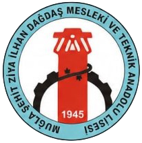

1
Element Avı
Periyodik tabloda elementi bul.
36 element × 4 zorluk.
0 / 36 element
%0

Kimyayı Keşfet
Periyodik tabloda elementi bul.
36 element × 4 zorluk.
Memory oyunuyla sembolleri eşle.
Latince köken bonusu.
Atomları birleştirip bileşik kur.
24 bileşik × 4 zorluk.